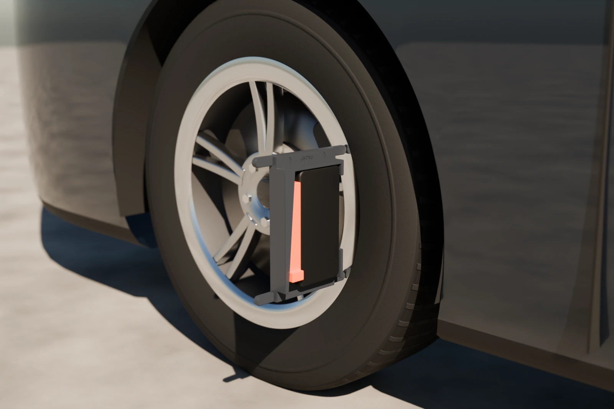

Help topics
Add camber
Camber is read on a second trip round the car, after the toe lap has closed, so handling the bracket for camber can’t disturb the toe numbers. A camber lap takes a few minutes more.

Before you start
- Before Start, tick Camber, with Toe or on its own.
- Bracket Calibration must be saved: it gives the camber zero. Without it, camber is only relative.
- Choose the smoothest, flattest floor you can, and wipe away grit beside each tire.
At each tire
With Toe ticked too, do the toe lap as usual. When it closes, the toe card says Camber is next: don’t adjust anything yet. The app then sends you round the car again, starting at the nearest tire.
- Place on Ground. Lay the bracket flat on the floor beside the tire, screen up, FRONT forward, and let go until it buzzes.
- FRONT Back. Turn it where it lies so FRONT points to the back of the car, and let go again. These two readings measure the floor’s slope.
- Measure Top of Rim, as for toe.
- Measure Side of Rim. Stand the bracket on its edge against the side of the rim, FRONT pointing at the sky and the wedge side away from the rim. The screen faces the back of the car at the left wheels and the front at the right wheels. Use the same two-hand hold. Pick the front or back of the wheel, whichever is clear of the valve stem, weights and fender.
- Place on Same Spot. Lift it off and put it back the same way. The two must agree.
No flat floor beside a tire? Skip floor here leaves that axle uncorrected for the floor. Skip camber here gives up camber at that wheel.
If the toe lap doesn’t close, no camber is read; start over. Start over during camber keeps the saved toe result. Messages such as Wrong way round or Redo Rear Left are explained in Troubleshooting.
The result
The Camber card sits under the toe card: each wheel’s camber (negative means the top leans in), each axle’s cross camber (left minus right), a confidence, and what to do.
About the floor correction
The floor reading measures the patch beside each tire, and the car may sit on a slightly different slope. On a rough floor, readings at the same spot can vary by about 0.1the car may sit on a slightly different slope: the floor beside a tire can differ from where the tire sits by about 0.1°.deg;. A flatter spot will match a shop better. Camber is checked against your spec only when it is floor-corrected and calibrated.